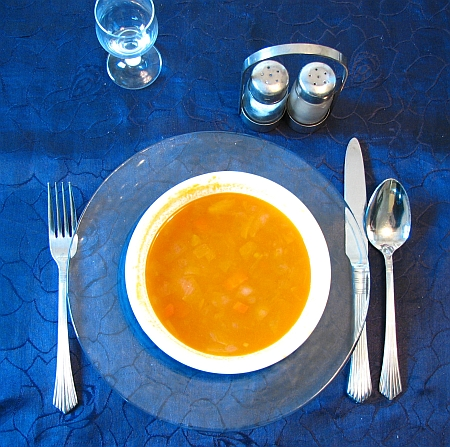

Draft only · noindex,nofollow · PL/EN · P1/P2 remediated
Zupy w redukcji masy
Lead PL: Zupy w redukcji masy: zupa jako sycący element redukcji, jeśli zawiera coś więcej niż wodę i warzywa. Ten szkic ma pomóc czytelnikowi podjąć kilka małych decyzji w zwykłym tygodniu, bez obietnic leczenia, bez straszenia i bez planu, którego nie da się utrzymać przy pracy, rodzinie albo podróży.

Najważniejsze wnioski
- Najpierw nazwij sytuację: zupy jako sycący element redukcji, jeśli mają białko i nie są tylko wodnistym wypełniaczem.
- Pierwszy krok to: do każdej zupy dopisz brakujący element: białko, węglowodany lub tłuszcz, zanim uznasz ją za pełny obiad.
- W praktyce oprzyj posiłki o: zupa soczewicowa, krupnik z mięsem lub tofu, pomidorowa z fasolą, krem z grzankami i pestkami, bulion z dodatkami.
- Nie idź w skrót: wodnista zupa może obniżyć kalorie obiadu, ale niekoniecznie utrzyma sytość do wieczora.
Sedno sprawy
Zupy w redukcji masy dotyczy przede wszystkim sytuacji: zupy jako sycący element redukcji, jeśli mają białko i nie są tylko wodnistym wypełniaczem. Najlepszy punkt wyjścia to zwykły tydzień, w którym da się powtórzyć podobne posiłki i zauważyć, co naprawdę pomaga. Artykuł nie ustawia jednej idealnej diety; porządkuje decyzje, które mają największą szansę być wykonane.
Pierwsze obserwacje
Pierwszy krok: do każdej zupy dopisz brakujący element: białko, węglowodany lub tłuszcz, zanim uznasz ją za pełny obiad. Dzięki temu zmiana jest mierzalna i nie zamienia się w chaotyczne usuwanie produktów. Jeśli po kilku dniach nie da się jej utrzymać, warto uprościć warunki, a nie dokładać kolejne zakazy.
Kompozycja posiłku
W praktyce przydadzą się: zupa soczewicowa, krupnik z mięsem lub tofu, pomidorowa z fasolą, krem z grzankami i pestkami, bulion z dodatkami. Taki zestaw daje punkt zaczepienia w sklepie i w kuchni. Nie każdy element musi pojawić się codziennie; ważniejsze jest, żeby posiłek miał funkcję: sycić, ułatwiać regularność albo zmniejszać liczbę przypadkowych decyzji.
Wariant awaryjny
Przy zakupach warto wybrać dwie wersje: domową i awaryjną. Domowa może być tańsza i bardziej powtarzalna, awaryjna ma ratować dzień, kiedy plan się rozsypuje. Wtedy czytelnik nie musi wybierać między perfekcją a całkowitym porzuceniem nawyku.
Ryzyko skrajności
Najważniejsza pułapka: wodnista zupa może obniżyć kalorie obiadu, ale niekoniecznie utrzyma sytość do wieczora. To szczególnie istotne w treściach zdrowotnych, bo radykalna rada często brzmi atrakcyjnie, ale nie daje lepszego monitorowania objawów ani jakości diety. Lepiej zmienić jeden element i wiedzieć, co się sprawdza.
Tydzień próbny
ugotuj garnek jednej zupy białkowej i zamroź dwie porcje; sprawdź, czy ogranicza przypadkowe zamawianie jedzenia. Do obserwacji wystarczą trzy sygnały: głód lub sytość, komfort trawienia oraz łatwość powtórzenia planu. Wyniki badań, masa ciała czy objawy przewlekłe wymagają dłuższego horyzontu niż jeden weekend.
Granice poradnika
przy niedowadze, rekonwalescencji lub małym apetycie zupy nie powinny wypierać energii i białka. Ten tekst jest edukacyjny i nie zastępuje diagnozy, leczenia ani indywidualnej konsultacji z lekarzem lub dietetykiem.
FAQ
Od czego zacząć przy temacie: zupy w redukcji masy?
Zacznij od najprostszej obserwacji: do każdej zupy dopisz brakujący element: białko, węglowodany lub tłuszcz, zanim uznasz ją za pełny obiad. Jedna zmiana daje lepszą informację niż pięć działań wprowadzonych jednocześnie.
Czy potrzebuję specjalnych produktów?
Zwykle nie. Najpierw wykorzystaj proste opcje: zupa soczewicowa, krupnik z mięsem lub tofu, pomidorowa z fasolą, krem z grzankami i pestkami, bulion z dodatkami. Produkty specjalistyczne mają sens dopiero wtedy, gdy rozwiązują konkretny problem, a nie tylko wyglądają zdrowiej.
Kiedy dieta nie wystarczy?
przy niedowadze, rekonwalescencji lub małym apetycie zupy nie powinny wypierać energii i białka. W takich sytuacjach dieta może być wsparciem, ale nie powinna opóźniać diagnostyki ani leczenia.
Nota bezpieczeństwa
Artykuł ma charakter edukacyjny i nie zastępuje diagnozy, leczenia ani indywidualnej konsultacji medycznej lub dietetycznej. przy niedowadze, rekonwalescencji lub małym apetycie zupy nie powinny wypierać energii i białka
Soups during weight loss
Lead EN: Soups during weight loss: soup as a filling part of weight loss when it contains more than water and vegetables. This draft helps the reader make a few small decisions in an ordinary week, without treatment promises, scare tactics or a plan that collapses around work, family or travel.
Key takeaways
- Start by naming the situation: zupy jako sycący element redukcji, jeśli mają białko i nie są tylko wodnistym wypełniaczem.
- The first step is to add the missing element to every soup: protein, carbohydrate or fat before calling it a full lunch.
- In practice, build around: lentil soup, barley soup with meat or tofu, tomato soup with beans, vegetable cream with croutons and seeds, broth with additions.
- Avoid the shortcut that a watery soup may reduce lunch calories but may not keep you full until evening.
The core idea
Soups during weight loss is mainly about this situation: zupy jako sycący element redukcji, jeśli mają białko i nie są tylko wodnistym wypełniaczem. The best starting point is an ordinary week in which similar meals can be repeated and patterns can be noticed. The article does not prescribe one perfect diet; it organises the decisions most likely to be carried out.
First observations
The first step is to add the missing element to every soup: protein, carbohydrate or fat before calling it a full lunch. This makes the change measurable and prevents chaotic food removal. If it cannot be maintained after a few days, simplify the conditions rather than adding more rules.
Meal composition
Practical options include: lentil soup, barley soup with meat or tofu, tomato soup with beans, vegetable cream with croutons and seeds, broth with additions. This gives the reader a shopping and cooking anchor. Not every element must appear daily; what matters is the job of the meal: fullness, rhythm or fewer random decisions.
Backup option
For shopping, it helps to choose two versions: a home version and a backup version. The home version can be cheaper and more repeatable; the backup version saves the day when the plan falls apart. This avoids an all-or-nothing choice between perfection and abandoning the habit.
Risk of extremes
The key trap is that a watery soup may reduce lunch calories but may not keep you full until evening. This matters in health content because radical advice often sounds attractive but does not improve symptom tracking or diet quality. Changing one element gives clearer feedback.
Trial week
cook one pot of protein-rich soup and freeze two portions; check whether it reduces random takeaway orders. Three signals are enough to monitor: hunger or fullness, digestive comfort and whether the plan can be repeated. Lab results, body weight and chronic symptoms need a longer horizon than one weekend.
Limits of the guide
with underweight, recovery or low appetite, soups should not displace energy and protein. This article is educational and does not replace diagnosis, treatment or an individual consultation with a doctor or dietitian.
FAQ
Where should I start with zupy w redukcji masy?
Start with the simplest observation: add the missing element to every soup: protein, carbohydrate or fat before calling it a full lunch. One change gives clearer feedback than five actions introduced at the same time.
Do I need special products?
Usually not. Start with simple options: lentil soup, barley soup with meat or tofu, tomato soup with beans, vegetable cream with croutons and seeds, broth with additions. Specialist products make sense only when they solve a specific problem, not just because they look healthier.
When is diet not enough?
with underweight, recovery or low appetite, soups should not displace energy and protein. In such situations, diet can support care but should not delay diagnosis or treatment.
Safety note
This article is educational and does not replace diagnosis, treatment or individual medical or nutrition advice. with underweight, recovery or low appetite, soups should not displace energy and protein